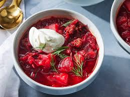

Home
Ukrainian Borscht Recipe

Description
A traditional Ukrainian beet soup packed with vegetables and rich flavors.
Perfect for a hearty meal!
Ingredients
- 2 medium beets, peeled and grated
- 1 medium carrot, grated
- 1 medium potato, diced
- 1/2 small cabbage, shredded
- 1 small onion, chopped
- 2 cloves garlic, minced
- 6 cups beef or vegetable broth
- 2 tablespoons tomato paste
- 1 tablespoon vegetable oil
- 1 bay leaf
- Salt and pepper to taste
- Sour cream and fresh dill for garnish
Steps
-
Heat vegetable oil in a large pot over medium heat. Add chopped onion
and garlic, and sauté until translucent.
-
Add grated beets and carrots to the pot. Cook for about 5 minutes,
stirring occasionally.
- Stir in the tomato paste and cook for another 2 minutes.
-
Add diced potatoes, shredded cabbage, and broth to the pot. Bring to a
boil.
-
Reduce heat to low, add the bay leaf, and simmer for about 30-40
minutes, or until the vegetables are tender.
-
Season with salt and pepper to taste. Remove the bay leaf before
serving.
-
Ladle the borscht into bowls and garnish with a dollop of sour cream and
fresh dill.